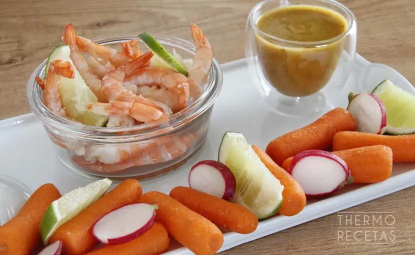
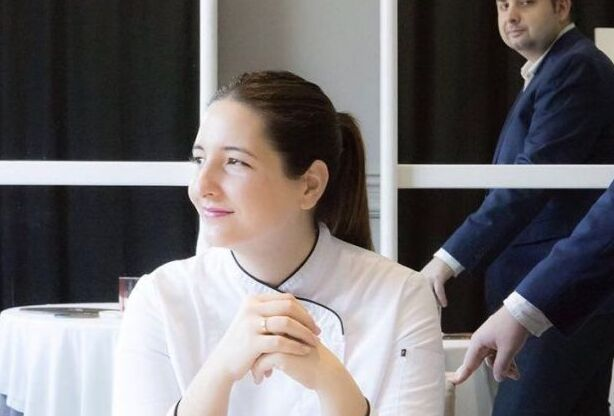
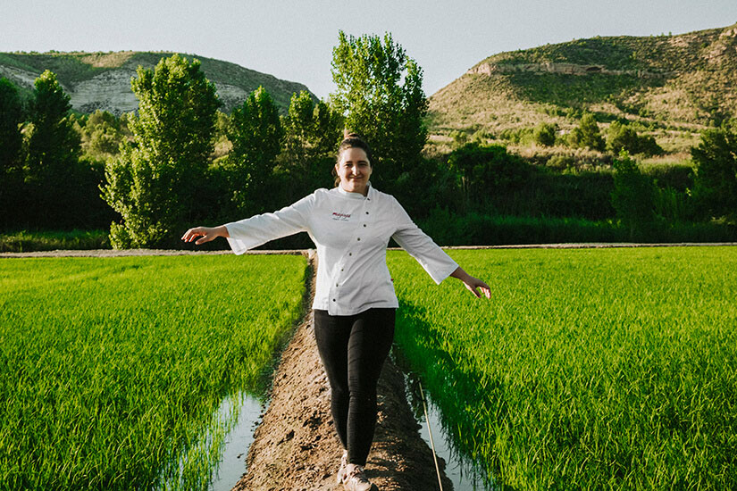
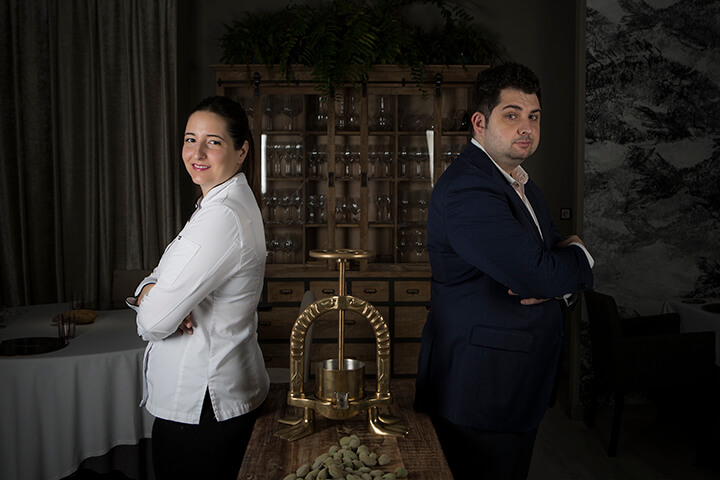

María Gómez
Magoga Cartagena (2014) - 1⭐ Michelin, equilibrio huerta-mar
De Fuente Álamo a Estrella Michelin. María Gómez (1987), formada en AIALA Karlos Arguiñano y Basque Culinary Center, abrió Magoga (2014) en Cartagena con Adrián de Marcos: evolución de casa de comidas a referente con 1⭐ Michelin y 2 Soles Repsol, exaltando Campo de Cartagena [web:1][web:3].
Inspirada por su abuela y tradición agrícola murciana, fusiona vanguardia-tradición: arroz Calasparra, gamba roja, salmorreta. Equilibrio huerta-medio mar Mediterráneo, finalista Cocinero Revelación Madrid Fusión 2019 [web:2][web:7].
Premios: Cartagenera del Año 2022/2023, Jóvenes Empresarios CaixaBank. Pionera joven que proyecta gastronomía murciana global, reivindicando conciliación femenina [web:3][web:6].
Quisquilla con salsa de pimiento amarillo

Ingredientes (4p)
- 750 g de quisquillas
- 25 g de pimiento verde en brunoise
- 20 g de cebolla morada en juliana
- 60 g de mini calabacín laminado
- 12 láminas de mini mazorca de maíz
- 12 g de cilantro
- Harina de trigo
- Aceite de girasol
- Ralladura de lima
- Salsa: 900 g pimiento amarillo, 15 g cilantro, media cebolleta, 10 g salsa sriracha, 15 g sal, 500 g leche almendras, 70 ml zumo limón, 70 ml zumo lima
Preparación
- Limpiar y descascarillar las quisquillas. Reservar.
- Asar pimientos, limón y lima en horno hasta dorados. Pelar pimientos, triturar con zumos, añadir resto ingredientes, triturar, colar y reservar salsa.
- Enharinar 4 cabezas de quisquilla, freír en aceite girasol, reservar en papel absorbente.
- Emplatar: base de salsa pimiento amarillo, cabeza frita en centro, 3 quisquillas alrededor con pimiento verde, cebolla, calabacín, mazorcas y cilantro. Ralladura lima.
Galería


